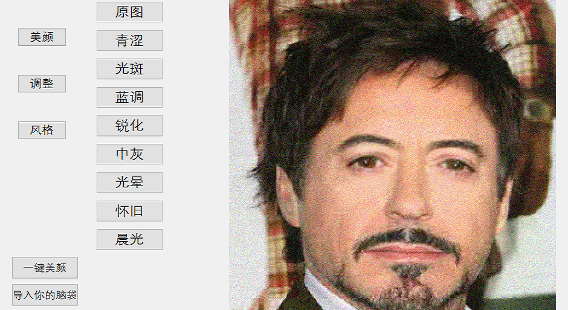

Medical Multiomics
Medical Multiomics
医学多组学是探索体内多种物质相互作用的综合方法，包括基因组学、蛋白质组学、代谢组学等。它有可能发现预防和治疗疾病的新策略。基于KEGG数据库，我们开发并实现了4种不同的方法来分析与寨卡病毒（ZIKV）、新冠肺炎和三阴性乳腺癌（TNBC）相关的多组学数据集，包括基于规则的非人工智能方法、部分不匹配样本的前馈网络、基于XGBoost模型的SHAP分析和改进的P-Net模型。我们的结果揭示了这些疾病的一些显著障碍。特别是，我们的方法发现编码CD39的ENTPD1是TNBC的潜在关键基因，这与先前报道的实验结果一致。然而，由于缺乏来自大队列样本的大数据集，特别是一致的多组数据集，我们的分析是有限的。通过使用我们开发的方法，有希望从大型队列数据集中获得更多的发现。
完成人：刘益枫、潘云舟、田宇辰（清华大学交叉信息研究院）；指导教师：袁洋（清华大学交叉信息研究院）、胡泽平（清华大学药学院）；技术支持：赵宜滋（清华大学药学院）、李彪（上海期智研究院）、王晟（华盛顿大学）
Medical multi-omics is a comprehensive approach for exploring the interaction of multiple substances in the body,
including genomics, proteomics, metabolomics, etc. It has the potential to discover new strategies for prevention
and treatment of diseases. Based on KEGG database, we developed and implemented 4 different methods to analyze
variant multi-omics datasets related to Zika virus(ZIKV), COVID-19 and Three Negative Breast Cancer(TNBC),
including rule-based non-AI method, feed-forward network for partially unmatched samples, SHAP analysis on XGBoost
model and improved P-Net model. Our results have revealed some significant disturbances for these diseases.
Particularly, our method discovered ENTPD1, which encodes CD39, as a potentially crucial gene for TNBC, which is
consistent with the experimental results as previously reported. However, due to lack of big datasets from large
cohort samples, especially consistent multi-omic dataset, our analyses are limited. It is promising that more
discoveries can be made from large cohort datasets by using our developed methods.
Completed by: Liu Yifeng, Pan Yunzhou, Tian Yuchen(IIIS of THU); Instructors: Yuan Yang(IIIS of THU), Hu
Zeping(School of Pharmaceutical Science, THU); Technical support: Zhao Yizi(School of Pharmaceutical Science,
THU), Li Biao(Shanghai Qi Zhi Institute), Wang Sheng (UW)
